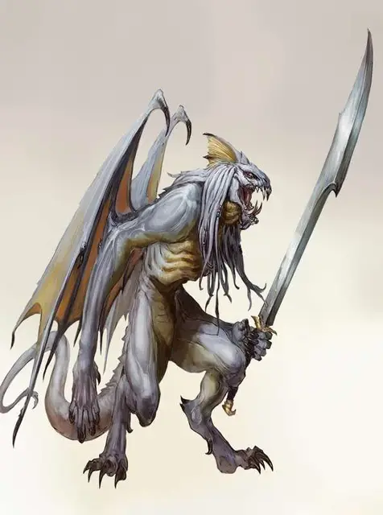

Белый абишай
White Abishai
Среднее Исчадие (Дьявол), законно-злое

Класс Доспеха 15 (природный доспех)
Хиты 68 (8к8 + 32)
Скорость 30 футов, летая 40 футов
| мод | спас | ||
|---|---|---|---|
| СИЛ | 16 | +3 | +6 |
| ЛОВ | 11 | +0 | +0 |
| ТЕЛ | 18 | +4 | +7 |
| мод | спас | ||
|---|---|---|---|
| ИНТ | 11 | +0 | +0 |
| МДР | 12 | +1 | +1 |
| ХАР | 13 | +1 | +1 |
Сопротивление урону дробящий, колющий, рубящий от немагических атак, кроме нанесённых посеребрённым оружием
Иммунитет к урону огонь, холод, яд
Иммунитет к состояниям отравление
Чувства тёмное зрение 120 футов, пассивное Восприятие 11
Языки Драконий, Инфернальный, Телепатия 120 фт.
Опасность 6 (2300 опыта)
Бонус мастерства +3
Среда обитания Город
Особенности
Дьявольское зрение. Магическая тьма не мешает тёмному зрению абишая.
Сопротивление магии. Абишай совершает с преимуществом спасброски от заклинаний и прочих магических эффектов.
Магическое оружие. Атаки оружием абишая являются магическими.
Безрассудство. В начале своего хода, абишай может получить преимущество ко всем своим броскам атаки рукопашным оружием в течение этого хода, однако броски атаки против него получают преимущество до начала следующего хода абишая.
Действия
Мультиатака. Абишай совершает две атаки: одну длинным мечом и одну когтями.
Длинный меч. Рукопашная атака оружием: +6 к попаданию, досягаемость 5 футов, одна цель. Попадание: 7 (1к8 + 3) рубящего урона, или 8 (1к10 + 3) рубящего урона при ударе двумя руками.
Когти. Рукопашная атака оружием: +6 к попаданию, досягаемость 5 футов, одна цель. Попадание: 8 (1к10 + 3) рубящего урона.
Укус. Рукопашная атака оружием: +6 к попаданию, досягаемость 5 футов, одна цель. Попадание: 5 (1к4 + 3) колющего урона плюс 3 (1к6) урона холодом.
Реакции
Жестокое возмездие. В ответ на полученный урон абишай совершает атаку Укусом против случайного существа в пределах 5 футов от себя. Если ни одно существо в зоне этой досягаемости, абишай перемещается к противнику, которого он может видеть, на расстояние равное половине своей скорости, не вызывая при этом атак по возможности у других существ.
Описание
Каждый абишай когда-то был смертным, который каким-то образом завоевал милость Тиамат до своей смерти, и в качестве награды, его душа преобразовалась в отвратительного дьявола, чтобы служить ей в Девяти Преисподней.
Посланники погибели. Тиамат использует абишаев как агентов, отправляя их, чтобы представлять её интересы в Преисподней и по всей Мультивселенной. У некоторых простые задачи, такие как предоставление послания культистам или принятие на себя обязанностей, поклоняющихся выполнять чуждую миссию. Другие имеют более широкие обязанности, такие как ведение больших групп, убийство целей и участие в войсках. Во всех случаях абишаи фанатично лояльны к Тиамат, и при необходимости, готов отдать свою жизнь.
Чужаки в Аду. Абишаи не входят в обычную иерархию Девяти Преисподней, имея свою собственную цепь командования, беспрекословно подчиняясь Тиамат (и Асмодею, когда тёмный лорд решает использовать их). Другие архидьяволы могут приказывать абишаям работать на них, но большинство из них редко делает это, так как никогда не ясно, выполняет ли абишай приказы Тиамат или Асмодея. Существует неотъемлемый риск того, что приказ, отданный Тиамат, может отмениться из-за вмешательства в планы Асмодея.
Белые абишаи. Хоть они и являются самыми маленькими из своего вида, белые абишаи сражаются с безрассудной яростью, что делает их идеально подходящими для укрепления рядов армий Тиамат. Белые абишаи сражаются бесстрашно, становясь вихрем разрушения на поле битвы.